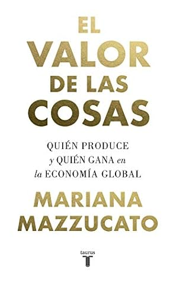

El valor de las cosas
Reseña por Jorge I. Zuluaga

Ver detalles · Ver reseña en GoodReads (necesita cuenta)
"El valor de las cosas" es un libro que presenta una tesis concreta, bastante simple (en su presentación básica) y con un impacto significativo en la sociedad: a la economía contemporánea, tanto a la teoría como, en especial, a la práctica, les falta una verdadera definición de qué es el valor; el valor de las cosas, el valor del trabajo, el valor del futuro.
No soy economista, pero me sorprendió mucho descubrir, a través de las páginas del libro, que el concepto que para mí debería estar en el centro de las ciencias económicas es precisamente el concepto más esquivo, el peor definido de todos. Para ofrecer un comparativo traído de mi área, es como si los físicos no supiéramos exactamente qué es la energía o no la hubiéramos definido rigurosamente. Para ponerlo aún más cerca de la vida diaria, es como si los bomberos todavía se debatieran en acalorados debates para definir qué es el fuego.
Pero es aún peor: de la definición de qué es el valor dependen las políticas económicas que nos afectan a todos y que, tal y como demuestra ampliamente la profesora Mazzucato, podrían estar en el corazón de algunos de los problemas sociales (p. ej., desigualdad y pobreza) y ambientales (p. ej., depredación de la naturaleza y residuos) más graves del presente.
La exhaustiva demostración de la tesis de la profesora Mazzucato de que no existe una definición apropiada del valor de las "cosas" en la economía se divide en cuatro grandes apartes (esta es mi división): una introducción histórica (capítulos 1 y 2); una descripción y análisis detallado de la manera como se mide actualmente la riqueza de las naciones a través del denominado PIB (capítulo 3); una pormenorizada relación de la historia del sector financiero y de cómo pasó de ser un simple intermediario en las economías del mundo a una fuerza supuestamente productiva internacional, pero peor aún, de cómo está conduciendo a la financiarización de la verdadera economía productiva (capítulos 4, 5 y 6); un juicioso análisis de la denominada economía de la innovación y de la teoría del valor en su contexto (capítulo 7); y finalmente, pero no menos importante, un análisis del infravalorado sector público (capítulo 8).
La parte histórica, para mí, fue todo un descubrimiento. Después de haber leído referencias tangenciales a los grandes personajes de la economía y a algunas de sus ideas en libros de historia más generalistas, ver por fin organizado en un texto agradable de leer, y escrito por una autoridad en la materia, algunos de los hitos más importantes en el desarrollo de la economía, desde su origen como una ciencia social en los 1600 hasta su ascenso como una supuesta ciencia exacta en el presente, fue bastante ilustrativo.
Naturalmente, el texto no se vende a sí mismo como una breve historia de la economía. En su exposición, la profesora Mazzucato se concentra específicamente en la evolución del concepto de valor; por supuesto, la economía es mucho más que esto. Pero su descripción de las ideas más importantes de personajes como Adam Smith, Karl Marx o John Maynard Keynes (¿quién no conoce esos nombres?) es excelente y muy ilustrativa para quienes no somos economistas.
Los capítulos dedicados a las finanzas son, para decirlo de forma que quede bien clara y evitar que me maldiga quien se anime a leer el libro por mi culpa cuando esté pasando por esas páginas, prácticamente incomprensibles para el profano.
Tuve que hacer un gran esfuerzo de concentración y llenarme de mucha paciencia para terminar de leerlos (estamos hablando de 110 páginas, poco menos del 30% del libro). En realidad, en más de una ocasión pensé abandonar el libro en medio de algunas incomprensibles explicaciones sobre el funcionamiento del sector financiero. Tal vez personas más ilustradas puedan encontrar sencillos los conceptos que allí se presentan, pero para mí eran casi completamente nuevos.
¿Se podría leer el libro sin pasar por esos pesados capítulos dedicados a las finanzas? Tal vez, pero no lo recomiendo.
A pesar de lo difícil que pueda parecer entender el rol que el sector financiero tiene en toda la problemática del valor y, en general, en el estado de cosas de la sociedad actual, es muy importante para apreciar en su integridad la tesis de la profesora Mazzucato. Quien lea estos capítulos y no termine odiando (aún más) al sector financiero, es porque trabaja en él o se beneficia de su grosera actividad extractivista (quiero aclarar que la profesora Mazzucato nunca usa adjetivos inapropiados como estos, pero su análisis del sector es contundente, claro y sin pelos en la lengua).
Los capítulos dedicados a la innovación y al sector público son, sin lugar a dudas, los más brillantes de todo el libro. Tal vez mi juicio superlativo de estos apartes se vea sesgado por mi trabajo; soy científico y trabajo en una universidad pública, pero a juzgar por la influencia que las ideas de la profesora Mazzucato vienen teniendo en la sociedad, especialmente en los sectores progresistas (yo personalmente leí el libro después de oír que Gustavo Petro, presidente electo de Colombia cuando escribo esta reseña, hablaba de ella), diría que en esos capítulos, los de la innovación y el sector público, está precisamente el quid de la tesis de Mazzucato.
Para resumirlo en dos frases (la profesora Mazzucato invierte 120 páginas): 1) innovación sí, pero no así, y 2) el Gobierno es productivo, pero nadie lo reconoce.
La innovación produce mucho valor, pero lo hace en red: no se puede identificar a un solo agente como el responsable de la creación de ese valor. El mejor ejemplo es el de las telecomunicaciones que dan forma al mundo en el que vivimos.
El surgimiento, por ejemplo, del teléfono inteligente fue una innovación maravillosa que hizo inmensamente ricas a unas cuantas personas (beneficios derivados del valor), pero en realidad se basó en la existencia de valor previamente producido, especialmente por el mayor inversor de riesgo que existe: los gobiernos. Fue precisamente gracias a esos cuales que se desarrollaron tecnologías como los microprocesadores, el GPS o las pantallas táctiles. Lamentablemente, los beneficios derivados de esa innovación no han llegado todavía a los gobiernos (y de allí a todos nosotros), ni siquiera a los trabajadores de los sectores en los que se producen esas innovaciones. Esta es una clara demostración de que la economía no entiende todavía muy bien el significado del "valor".
El problema del Gobierno o del Estado: ¡qué problema!
¿Debe intervenir ampliamente en los mercados o hacerse a un lado? ¿Debe crecer o contraerse? ¿Debe reclamar los beneficios que le corresponden? ¿Cuáles serían las consecuencias de recibir esos beneficios? ¿Cuáles son los números mágicos que definen la salud o enfermedad de la economía nacional? En "El valor de las cosas" encontré respuestas a, o más bien sugerencias de cómo podrían responderse en el futuro esas preguntas. El resultado es sencillamente maravilloso y se ajusta de forma exquisita a algunos proyectos políticos que están surgiendo actualmente, especialmente en Latinoamérica, incluyendo a Colombia.
Espero que en un futuro, cuando vuelva a leer esta reseña, no me arrepienta de lo que escribí, pero, si Mariana Mazzucato tiene razón, si podemos concebir un funcionamiento de la economía más justo, uno en el que el Gobierno sea reconocido como un agente productivo, uno que nos dé esperanza, el cambio político que vemos en países como Chile, Colombia y posiblemente Brasil, va en la dirección correcta.
Espero no equivocarme y, si lo hago, ojalá no sea después muy tarde para corregir otra vez el rumbo.